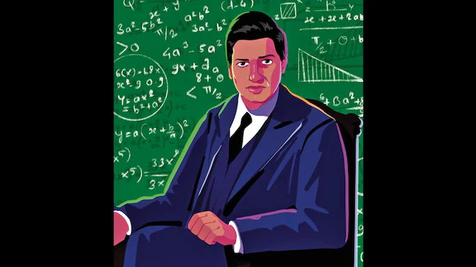

The Man Behind the Mathematician
Godfrey H. Hardy was annoyed. The renowned Cambridge University mathematician had just received a letter from a strange Indian named Srinivasa Ramanujan, asking him for his opinion of 120 mathematical theorems that Ramanujan claimed he’d discovered. Hardy regularly got letters from cranks claiming to have solved all kinds of problems, and this one seemed no different. He glanced at it with distaste.
Many of the theorems made no sense. Of the others, one or two were already well-known. Ramanujan must be some kind of fraud, Hardy decided, and tossed the letter aside.
But all that day the letter kept nagging Hardy. Might there be something in those wild-looking theorems? That evening he summoned another brilliant Cambridge mathematician, J. E. Littlewood, and the two men set out to assess the Indian’s worth.
By midnight they knew the truth. Srinivasa Ramanujan was a genius. As Hardy explained later, many of those fantastic theorems had to be true because “no one would have had the imagination to invent them. Great mathematicians are commoner than thieves or humbugs of such incredible skill.”
That incident in January 1913 was a turning point in the history of mathematics. At the time, Ramanujan was an obscure Madras Port Trust clerk. A little more than a year later, he was at Cambridge University, and beginning to be recognized as one of the most amazing mathematicians the world has known. Though he died in 1920, much of his work was so far in advance of his time that only in recent years is it beginning to be properly understood. Indeed, his results are helping solve today’s problems in computer science and physics, problems that he’d had no inkling of.
By
SDpoidermon